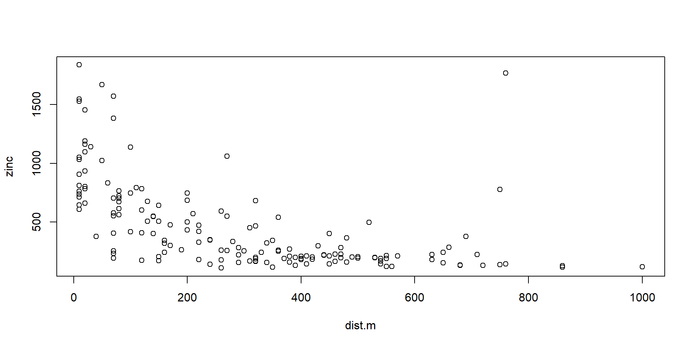

flowchart LR
A[Dobra praksa za inženjerske proračune] --> B[Menadžment podataka] --> C[Neobrađeni podaci] --> D[Sačuvani na više lokacija]
C[Neobrađeni podaci] --> E[Dokumentovani]
C[Neobrađeni podaci] --> F[DOI]
C[Neobrađeni podaci] --> G[Dostupni kroz servis]
B[Menadžment podataka] --> IP[Procesirani podaci];
A --> P[Procesiranje podataka i proračuni] --> K[Korišćenje proverenih paketa i alata]
P[Procesiranje podataka i proračuni] --> J[Dekomponovan kod na skripte i funkcije ]
P[Procesiranje podataka i proračuni] --> H[Korišćenje verzioniranja koda]
P[Procesiranje podataka i proračuni] --> I[Dokumentacija koda];
A --> L[Saradnja sa koautorima] --> PP[Pregled projekta]
L[Saradnja sa koautorima] --> SF[Struktura foldera svima jasna]
L[Saradnja sa koautorima] --> Z[Jasno definisani zadaci]
Ponovljiva istraživanja koristeći Quarto
Milan Kilibarda, 29.09.2023. GRF Bgd
Sadržaj
- Ponovljivo istraživanje (Reproducible research)
- Dobra praksa za inženjerske proračune
- Quarto
- Primer za prezentaciju
- Primer za izveštaj
- Primer za websajt
- Primer za knjigu
Uvod
Prostorni podaci se koriste u različitim oblastima za podršku donošenju odluka:
- uključujući zaštitu životne sredine,
- javno zdravlje,
- ekologiju,
- poljoprivredu,
- urbanističko planiranje, ekonomiju i društvo.
Ovi podaci potiču iz različitih izvora i dostupni su u više formata.
Izvori prostornih podataka
- Daljinska detekcija – Podaci o korišćenju zemljišta i ekološkim pojavama prikupljaju se putem satelita i drugih platformi za snimanje na daljinu.
- Monitoring stanice – Na određenim lokacijama obezbeđuju detaljne informacije o klimatskim i ekološkim promenljivama poput temperature, padavina i zagađenja vazduha.
- Ankete i istraživanja – Prikupljaju podatke o društvenim, ekonomskim i zdravstvenim aspektima.
- Mobilni telefoni i društvene mreže – Omogućavaju informacije o lokaciji i aktivnostima pojedinaca.
Ponovljivo istraživanje (Reproducible research)
Ponovljivo istraživanje (Reproducible research)
Istraživanje se smatra ponovljivim kada se tačni rezultati mogu reprodukovati ako se dobije pristup originalnim podacima, softveru ili kodu.
Ponovljivo istraživanje se vezuje i za termine:
ponovljiva statistička analiza,
ponovljiva analiza podataka,
ponovljivo izveštavanje (reporting) i
literarno programiranje.
Šta treba da bude ponovljivo
Razne vrste proračuna na bazi ulaznih podataka uključujući i:
Table
Vizuelizacije/figure/grafikoni
Vrednosti navedene u tekstu
Statistički dokazi koji podržavaju nalaze.
Zahtevi za ponovljivost
Dostupni su „neobrađeni”, sirovi podaci, pri čemu se „neobrađeni” odnosi na podatke pre bilo kakve manipulacije od strane istraživača (npr. pre bilo kakvog čišćenja i transformacije podataka).
Obezbeđen je kompletan set uputstava koja objašnjavaju sve korake koji se koriste u obradi i analizi podataka.
Svi elementi koji čine rezultate (tabele, grafici i proračuni mogu se ponoviti na jednostavan način uz kod, softver i izvorne podatke)
Ponovljivo istraživanje dijagram
Tipičan slučaj kad se ne koristi ponovljivo istraživanje

Izvor: Comic number 1869 from PhD Comics Copyrighted artwork by Jorge Cham. https://phdcomics.com/
Ne ponovljivo istraživanje
- Nema dovoljno dokumentacije o tome kako se eksperiment sprovodi i generišu podaci
- Podaci koji se koriste za generisanje originalnih rezultata nisu dostupni
- Softver koji se koristi za generisanje originalnih rezultata nije dostupan
- Teško je ponovo kreirati softversko okruženje (biblioteke, verzije) koje se koristi za generisanje originalnih rezultata
- Teško je ponovo pokrenuti računske korake
Prednosti ponovljivog istraživanja
Ako se čini da doprinos nauci i drugim istraživačima nije dovoljno ubedljiv, evo 5 sebičnih razloga da se radi reproduktivno prema Markowetz (2015):
- Pomaže da se izbegne gubitak podataka
- Olakšava pisanje radova
- Pomaže recenzentima da to vide na vaš način
- Omogućava kontinuitet vašeg rada
- Pomaže da izgradite svoju reputaciju
https://genomebiology.biomedcentral.com/articles/10.1186/s13059-015-0850-7
Dobra praksa za inženjerske proračune
Dobra praksa
Organizacija projekta 1

Organizacija projekta 2
example_project/
├── .gitignore
├── LICENSE.md
├── README.md
├── example_project.Rproj
├── inputs
│ ├── data
│ │ ├── unedited_data.csv
│ │ └── ...
│ ├── literature
│ │ ├── alexander-tellingstorieswithdata.pdf
│ │ ├── gelman-xboxpaper.pdf
│ │ └── ...
├── outputs
│ ├── README.md
│ ├── data
│ │ ├── analysis_data.csv
│ │ └── ...
│ ├── paper
│ │ ├── paper.pdf
│ │ ├── paper.qmd
│ │ ├── references.bib
│ │ └── ...
│ └── ...
├── scripts
│ ├── 00-simulate_data.R
│ ├── 01-download_data.R
│ ├── 02-data_cleaning.R
│ ├── 03-test_data.R
│ └── ...
└── ...Menadžment podataka
- Neobrađeni podaci su podaci onako kako su prvobitno generisani – trebalo bi da se čuvaju i koriste samo za čitanje
- Neobrađeni podaci moraju biti pohranjeni na više lokacija
- Kreirajte podatke kakve biste želeli da dobijete
- Praćenje vaših radnji (svih koraka u preprocesiranju i obradi) je ključni deo upravljanja podacima
- DOI je jedinstveni identifikator koji trajno identifikuje podatke i čini ih dostupnim
- Pronalaženje servisa za podatke prilagođenog vašim podacima je ključno za pronalaženje podataka i dostupnost široj zajednici
Gde možete deliti podatke i dobiti DOI za njih
- FigShare (http://figshare.com): A repository where users can make all of their research outputs available in a citable, shareable, and discoverable manner. Note that figshare is commercial.
- Zenodo (http://zenodo.org): A repository service that enables researchers, scientists, projects, and institutions to share and showcase multidisciplinary research results (data and publications)
- Dryad (http://datadryad.org): A repository that aims to make data archiving as simple and as rewarding as possible through a suite of services not necessarily provided by publishers or institutional websites.
- Dataverse (http://thedata.org): A repository for research data that takes care of long-term preservation and good archival practices, while researchers can share, keep control of, and get recognition for their data. https://carpentries-lab.github.io/good-enough-practices
Zenodo primer
 https://www.nature.com/articles/s41597-021-00901-2 https://zenodo.org/record/4058167
https://www.nature.com/articles/s41597-021-00901-2 https://zenodo.org/record/4058167
Procesiranje podataka i proračuni
Vaš softver je isto toliko proizvod vašeg istraživanja kao i vaši radovi. Pošaljite kod u renomirano skladište koje izdaje DOI, baš kao što radite sa podacima. DOI za softver obezbeđuju Figshare i Zenodo, na primer. I Figshare i Zenodo se integrišu direktno sa GitHub-om.
- Svaki kod koji se pokreće na vašim istraživačkim podacima je istraživački softver
- Napišite svoj kod da ga čitaju drugi ljudi, uključujući i vas u budućnosti
- Dekomponujte svoj kod na module: skripte i funkcije, sa smislenim imenima
- Budite eksplicitni u pogledu zahteva i zavisnosti kao što su ulazne datoteke, argumenti i očekivano ponašanje
Saradnja sa koautorima na projektu
- Napravite pregled svog projekta
- Naziv projekta
- Kratak opis
- Ažurne kontakt informacije
- Primer ili dva kako da pokrenete najvažnije zadatke
- Pregled strukture foldera
- Napravite zajedničku listu zadataka (todo lista, GitHub issues ,…)
- Odlučite o strategijama komunikacije (mailing liste, kanali komunikacije,…)
- Neka licenca bude eksplicitna (npr CCSA 4.0)
- Učinite projekat citiranim (Sekcija kako citirati)
Korisni alati
- Integrisana okruženja za pisanje koda i organizaciju projekta:
- PyCharm Pajton
- RStudio za R
- VSCode za razne jezike
- Jedinstveni dokumenti tekst, kod, podaci i sve na jednom mestu:
- Cookie Cutter project templates for reproducible science
https://carpentries-lab.github.io/good-enough-practices/05-project_organization.html
Praćenje promena git
Git je distribuirani sistem za kontrolu verzija, odnosno alat koji se koristi za praćenje promena u kodu i upravljanje verzijama projekta.
Kontrola verzija se odnosi na praćenje svih promena (dodavanje, brisanje, izmene) u datotekama i direktorijumima u okviru softverskog projekta tokom vremena.
Git je popularan sistem za kontrolu verzija koji omogućava programerima da prate i upravljaju razvojem softvera.
Git je distribuiran, što znači da svaki član tima ima kopiju celokupnog istorijata projekta na svom računaru.
Praćenje promena
- Male, česte promene je lakše pratiti
- Sistematsko praćenje promena pomoću check lista je od pomoći
- Sistemi kontrole verzija pomažu u pridržavanju dobrih praksi
Neki git resursi
- Software Carpentry git workshop
- Intro to git and GitHub for version control, Coding Club
- Git & GitHub Crash Course For Beginners, Traversy on YouTube
- Learn Git Branching, a visual and interactive way to learn Git on the web
- git-game, a command-line game for learning git commands
https://carpentries-lab.github.io/good-enough-practices/06-track_changes.html
Radovi
Dogovoriti se o radnom toku pre nego što počne pisanje
Rad putem e-maila funkcioniše bolje uz informativne nazive datoteka, dobru organizaciju projekta i jasnu koordinaciju
Dokumenti u tekstualnom formatu sa kontrolom verzija bolje funkcionišu ako su autori upoznati sa alatima: Radovi u tekstualnom formatu (npr. LaTeX, Markdown, Quarto, RMD …) sa sistemom za kontrolu verzija (kao što je Git) mogu bolje da se skaliraju ako svi autori dobro poznaju ove alate.
Jedan centralni online pristup je moguć kad se koriste gore pominjani alati.
Kako je napravljena ova prezentacija
Ova prezentacija je napravljena kosristeći https://quarto.org.
Instalacija: https://quarto.org/docs/get-started/
Dokumentacija koja se odnosi na kreiranje prezentacija dostupna je na: https://quarto.org/docs/presentations/.
Quarto
Quarto je opensource softverski alat koji se koristi za generisanje dinamičkih dokumenata, uključujući izveštaje, prezentacije i knjige, koristeći programske jezike: R, Pajton, Julia, Observable JavaScript, TEX …
Quarto je koristan alat za inženjere, istraživače i sve one koji žele da generišu dinamičke izveštaje.
Za prezentacije sa integrisanim analizama podataka i vizualizacijama.
Omogućava korisnicima da automatizuju proces generisanja dokumenata, čime štede vreme i smanjuju mogućnost grešaka prilikom ažuriranja dokumenata.
Quarto slikovito

Quarto i RStudio
Integracija sa RStudijom: Quarto omogućava korisnicima da lako uključe R/Pajton/Julia … kod i izračunavanja u svoje dokumente.
Možete izračunavati statističke analize, generisati grafikone i tabele i prikazivati rezultate u realnom vremenu.
Quarto i RStudio 2

Quarto i formati
Quarto podržava različite izlazne formate, uključujući HTML, PDF, Word i druge.
To znači da možete generisati dokumente koji su pogodni za različite svrhe, kao što su deljenje na webu, štampanje ili prezentovanje.

Quarto dinamički dokumenti R kod u dokumentu

Quarto dinamički dokumenti R kod
Dokumenti generisani pomoću Quarta su dinamički.
To znači da se automatski ažuriraju kada se podaci ili kod promene.
Ovo je posebno korisno u dinimačnim projektima gde se često vrše promene i osvežavanje izveštaja.
`geocode()` has matched "Belgrade" to:
Belgrade in Central Serbia, Serbia
Population: 1273651
Co-ordinates: c(44.80401, 20.46513)# A tibble: 1 × 7
datetime interval temperature windspeed winddirection is_day
<dttm> <int> <dbl> <dbl> <int> <int>
1 2025-01-29 14:30:00 900 15.9 6.5 12 1
# ℹ 1 more variable: weathercode <int>Quarto dinamički dokumenti R kod u tekstu

Quarto dinamički dokumenti R
Rezultate analiza i proračuna možemo staviti direktno u tekst.
Npr. trenutna temperatura u Beogradu (openmeteo R paket) je 900 u trenutku 2025-01-29 14:30:00
Quarto dinamički dokumenti Pajton kod

Quarto dinamički dokumenti Pajton kod
Površina trougla.
Quarto dinamički dokumenti R kod
sample x y cadmium copper lead zinc elev dist.m om ffreq soil
1 1 181072 333611 11.7 85 299 1022 7.909 50 13.6 1 1
2 2 181025 333558 8.6 81 277 1141 6.983 30 14.0 1 1
3 3 181165 333537 6.5 68 199 640 7.800 150 13.0 1 1
4 4 181298 333484 2.6 81 116 257 7.655 270 8.0 1 2
5 5 181307 333330 2.8 48 117 269 7.480 380 8.7 1 2
6 6 181390 333260 3.0 61 137 281 7.791 470 7.8 1 2
lime landuse in.pit in.meuse155 in.BMcD
1 1 Ah FALSE TRUE FALSE
2 1 Ah FALSE TRUE FALSE
3 1 Ah FALSE TRUE FALSE
4 0 Ga FALSE TRUE FALSE
5 0 Ah FALSE TRUE FALSE
6 0 Ga FALSE TRUE FALSEQuarto dinamički dokumenti tabela

Quarto dinamički dokumenti tabela
Tabela
| sample | x | y | cadmium | copper | lead | zinc | elev | dist.m | om | ffreq | soil | lime | landuse | in.pit | in.meuse155 | in.BMcD |
|---|---|---|---|---|---|---|---|---|---|---|---|---|---|---|---|---|
| 1 | 181072 | 333611 | 11.7 | 85 | 299 | 1022 | 7.909 | 50 | 13.6 | 1 | 1 | 1 | Ah | FALSE | TRUE | FALSE |
| 2 | 181025 | 333558 | 8.6 | 81 | 277 | 1141 | 6.983 | 30 | 14.0 | 1 | 1 | 1 | Ah | FALSE | TRUE | FALSE |
| 3 | 181165 | 333537 | 6.5 | 68 | 199 | 640 | 7.800 | 150 | 13.0 | 1 | 1 | 1 | Ah | FALSE | TRUE | FALSE |
| 4 | 181298 | 333484 | 2.6 | 81 | 116 | 257 | 7.655 | 270 | 8.0 | 1 | 2 | 0 | Ga | FALSE | TRUE | FALSE |
| 5 | 181307 | 333330 | 2.8 | 48 | 117 | 269 | 7.480 | 380 | 8.7 | 1 | 2 | 0 | Ah | FALSE | TRUE | FALSE |
| 6 | 181390 | 333260 | 3.0 | 61 | 137 | 281 | 7.791 | 470 | 7.8 | 1 | 2 | 0 | Ga | FALSE | TRUE | FALSE |
Quarto dinamički dokumenti interaktivna karta

Quarto dinamički dokumenti interaktivna karta
Karta koncentracije cinka na mestima uzorkovanja.
Quarto dinamički dokumenti grafik

Quarto dinamički dokumenti grafik

Slika 1: Plot koncentracije cinka u zavisnosti od udaljenosti od reke.
Quarto dinamički dokumenti regresija
Linearna regresija
Call:
lm(formula = zinc ~ dist.m, data = meuse.all)
Residuals:
Min 1Q Median 3Q Max
-486.89 -175.85 -66.06 96.05 1747.51
Coefficients:
Estimate Std. Error t value Pr(>|t|)
(Intercept) 744.4788 39.9320 18.644 < 2e-16 ***
dist.m -0.9513 0.1079 -8.821 1.73e-15 ***
---
Signif. codes: 0 '***' 0.001 '**' 0.01 '*' 0.05 '.' 0.1 ' ' 1
Residual standard error: 310.5 on 162 degrees of freedom
Multiple R-squared: 0.3244, Adjusted R-squared: 0.3203
F-statistic: 77.8 on 1 and 162 DF, p-value: 1.73e-15Quarto dinamički dokumenti refernciranje na rezultate

Quarto dinamički dokumenti refernciranje na rezultate
Tabela 1 pokazuje ulazne podatke.
Slika 1 je grafik zavisnosti koncentracije cinka od udaljenosti od reke.
Quarto dinamički dokumenti citiranje
Kilibarda et al. (2014) je rad koji citiram …

Quarto i LaTeX

Quarto i LaTeX
Quarto podržava LaTeX, što omogućava napredno formatiranje dokumenata i visokokvalitetni izlaz u PDF formatu.
Formule za pravougle koordinate na sferi, ako su nam poznate krivolinijske zadate geografskom širinom i dužinom, \(\varphi\) i \(\lambda\), i poluprečnik sfere R.
\[ \begin{aligned} & X=R \cos \varphi \cos \lambda, \\ & Y=R \cos \varphi \sin \lambda, \\ & Z=R \sin \varphi . \end{aligned} \]
Quarto i HTML sadržaj

Quarto i HTML sadržaj
Quarto može da koristi HTML sadržaj direktno.
Quarto i HTML sadržaj open meteo api
https://api.open-meteo.com/v1/forecast?latitude=44.80401&longitude=20.46513&hourly=temperature_2m
Quarto i interaktivni sadržaj
Mogućnost interaktivnih elemenata: Možete uključiti interaktivne elemente kao što su grafikoni sa pokazivačem ili proširive/uvlačive sekcije u svoje dokumente kako biste poboljšali njihovu interaktivnost.
Quarto izveštaji (radovi)

https://github.com/paulcbauer/Writing_a_reproducable_paper_with_quarto/
Quarto websajt

Quatro knjiga

Preporuke za dalje čitanje
https://carpentries-lab.github.io/good-enough-practices
https://tellingstorieswithdata.com/03-workflow.html
https://carpentries-incubator.github.io/Reproducible-Publications-with-RStudio
https://github.com/joundso/repub
https://jjallaire.quarto.pub/reproducible-manuscripts-with-quarto/#/title-slide
Kilibarda, Milan, Tomislav Hengl, Gerard B. M. Heuvelink, Benedikt Gräler, Edzer Pebesma, Melita Perčec Tadić, and Branislav Bajat. 2014. “Spatio-Temporal Interpolation of Daily Temperatures for Global Land Areas at 1km Resolution.” Journal of Geophysical Research: Atmospheres 119 (5): 2294–2313. https://doi.org/10.1002/2013jd020803.